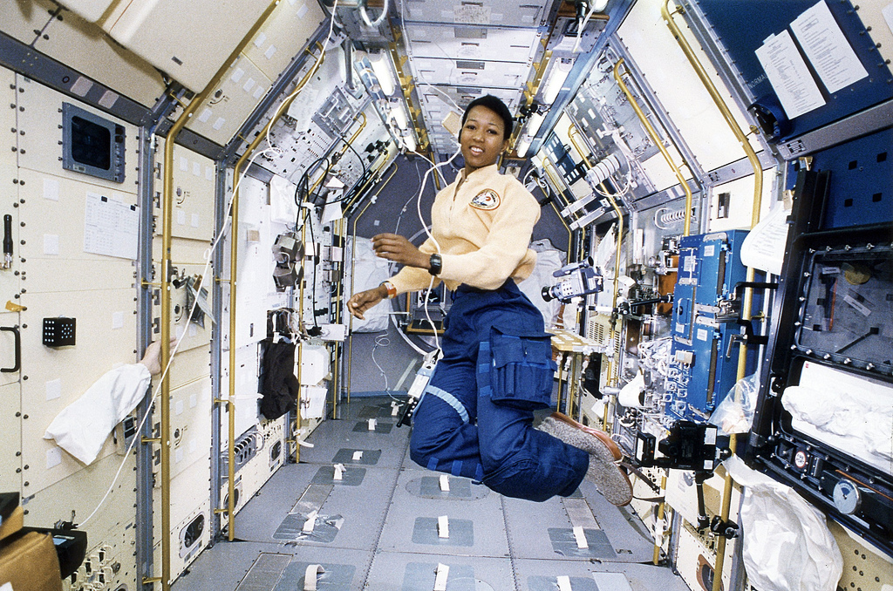
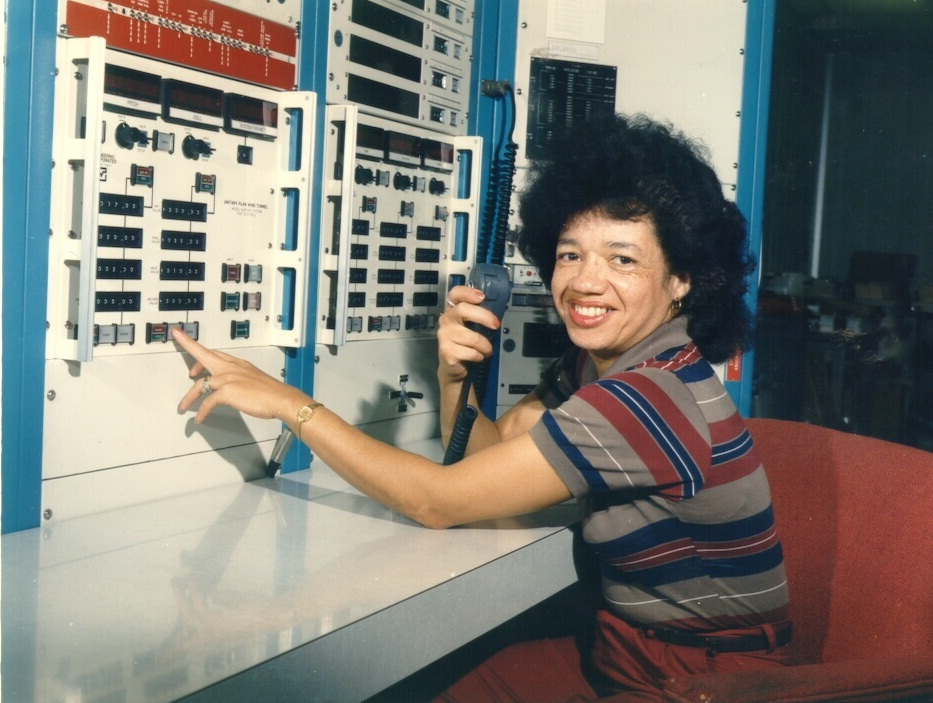
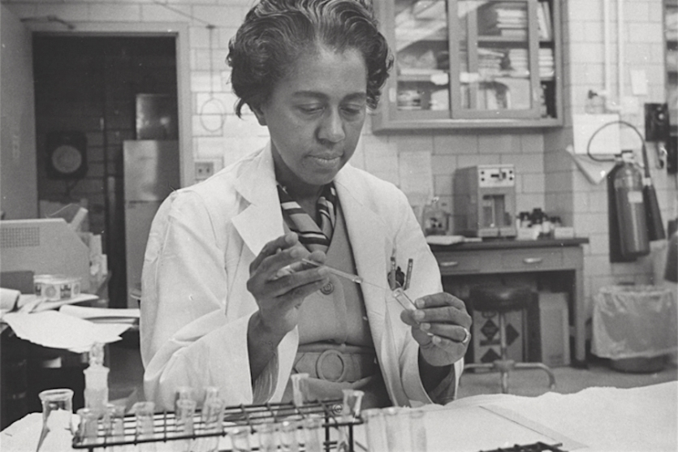
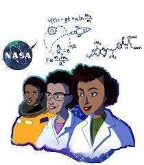

Get Inspiration!
Thanks for visiting my inspiration page! Are you a black women in the STEM fields and need someone to look up to? Are you feeling discouraged and need a pick-up? Are you just curious to see the strides that black women have made in STEM over the years? If you answered yes to one or more of those questions, this page is for you!

Mae Jemison
This is Mae Jemison. She was the first black women ever to go into space when she served as a mission specialist aboard the Space Shuttle Endeavor. Not only is she an astronaut, but she is also a engineer and physician!

Christine Darden
This is Christine Darden. She is an mathematician, data analyst and aeronautical engineer who worked at NASA for 40 years! She researched supersonic flight and sonic booms.

Dr.Marie Maynard Daly
This is Dr. Marie Maynard Daly. She was the first black women ever in the US to recieve her Pd.D in chemistry. Dr. Daly made important contributions in mnay areas of research like the chemistry of histones, protein synthesis, the relationships between cholesterol and hypertension, and creatine's uptake by muscle cells.
